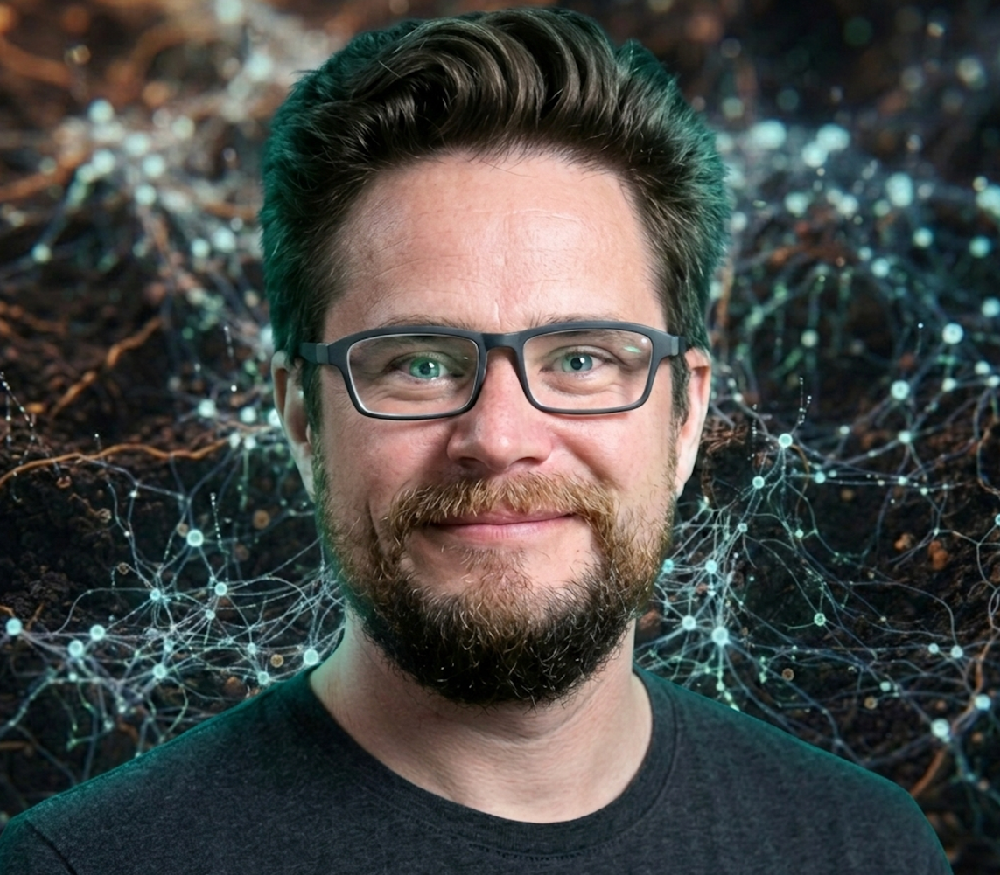

Systems Synthesist · Berlin
I build original frameworks from the intersection of domains most people keep separate: dentistry, rowing, nursing, LARP command, linguistics, and enterprise platform economics. The synthesis is the work.
Most people who reach my work arrive through one thread: a framework, a Substack article, a LinkedIn post. And then notice the others do not fit neatly into the same drawer. That is intentional.
I have spent decades acquiring deep capability in domains that seem unrelated: the timing mechanics of rowing synchronization, the command structures of large-scale LARP events, the semantic drift patterns in Old and Middle English, the thermodynamics of enterprise scaling. Each domain contributed specific, transferable principles. The synthesis is the rare thing.
The result is a set of frameworks for how agentic systems, platforms, and organizations can be designed to reduce entropy rather than fight it. Built from lived experience at every level, not borrowed from existing literature.
14 original frameworks. None borrowed from existing literature. Each emerged from a specific problem encountered in practice, resolved through cross-domain synthesis, and stress-tested against real organizational conditions.
The Substack is where frameworks develop in public. LinkedIn is where they get tested against the people who disagree.

I am not difficult to find, but I am selective about where I spend conversation. If you have read enough to understand what is being built here and have something worth exchanging. Reach out.